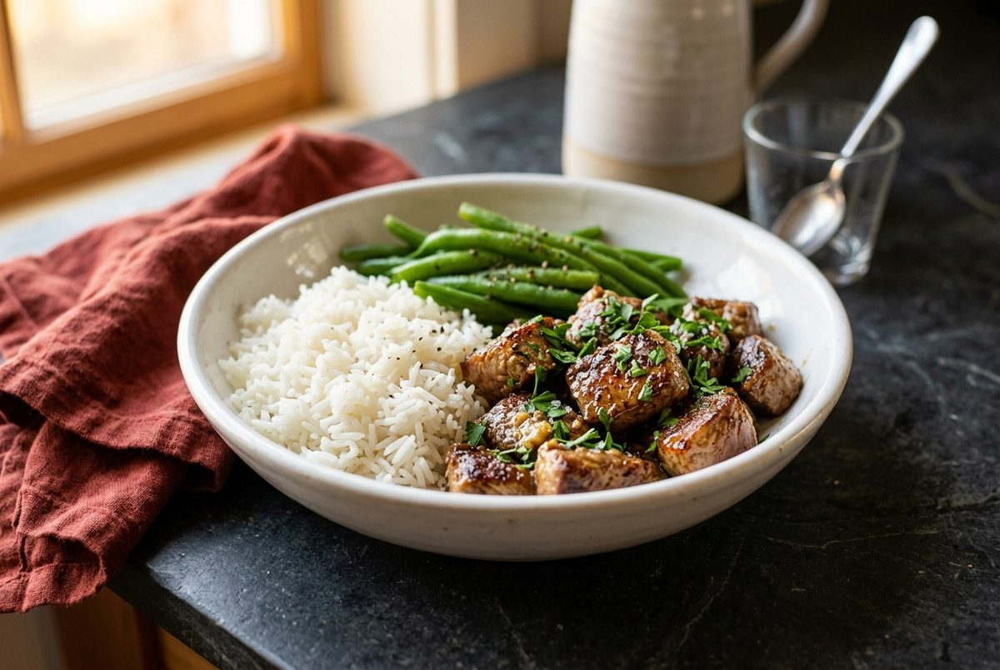
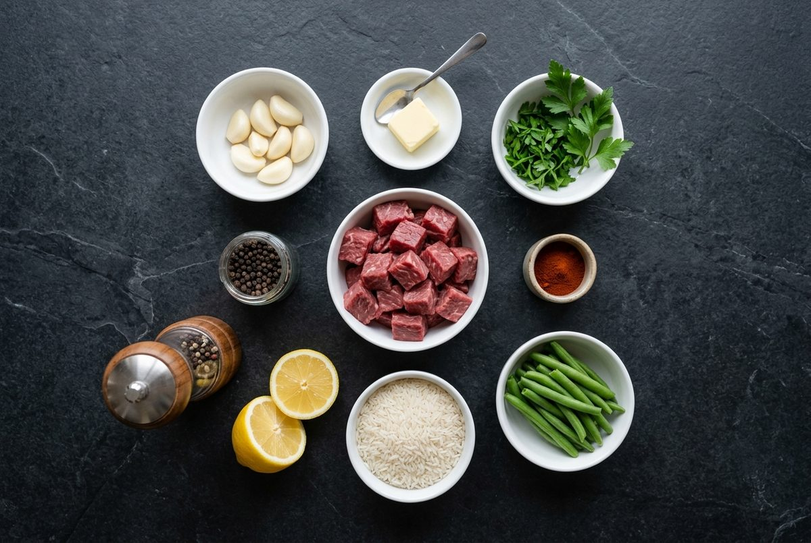
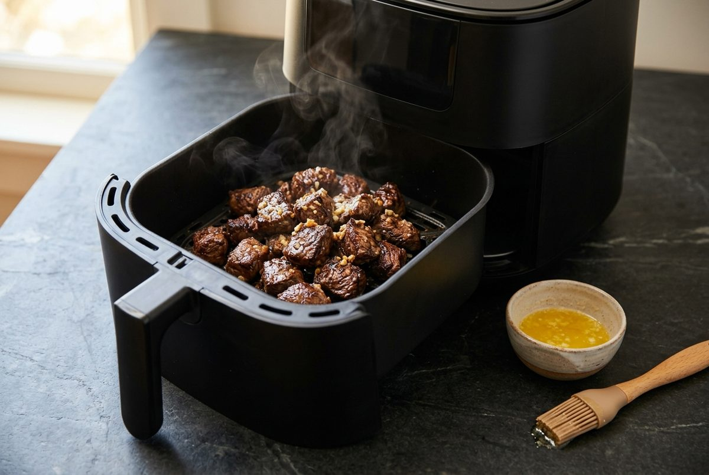
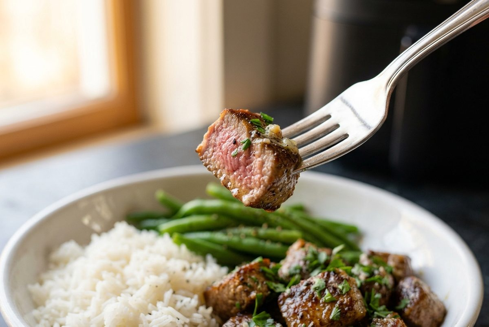
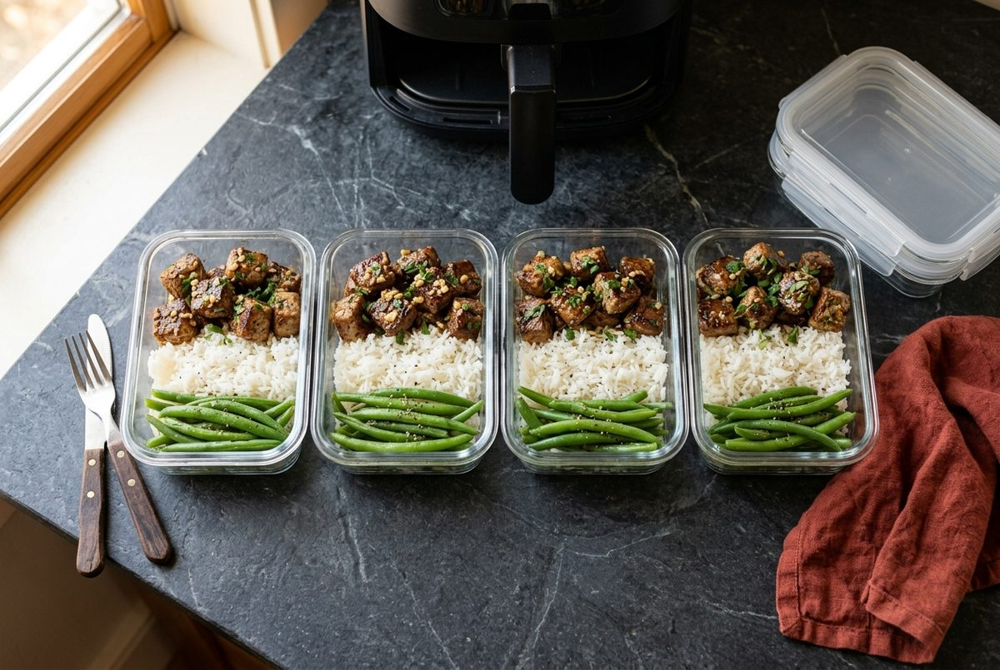

Air Fryer Garlic Butter Steak Bites Meal Prep Bowls (34g Protein, 25 Minutes)
Per serving (1 container, about 9 oz / 260g). Nutrition is an estimate and varies with brands and cuts of steak.

These air fryer garlic butter steak bites turn into high protein garlic butter steak bowls with rice and green beans in about 25 minutes. Each container has 34g of protein and about 380 calories, so it is a 30g protein meal prep under 400 calories.
The air fryer browns the edges of the sirloin in around 10 minutes with no pan splatter, then a quick toss in garlic butter, lemon and parsley finishes it. Lean steak, a measured portion of rice and a big serving of green beans make this easy steak meal prep for weight loss that still keeps you full.
Pack it into four glass containers and you have high protein low calorie lunch bowls ready for the days ahead. Prefer a stovetop version with broccoli rice? Try our Garlic Butter Steak and Broccoli Rice Bowls.
Ingredients

- 1.25 lb (565g) top sirloin steak, trimmed and cut into 3/4-inch (2cm) cubes
- 2 tbsp (28g) unsalted butter, melted
- 4 cloves garlic, minced
- 2 tsp (5g) smoked paprika
- 3/4 tsp salt, divided
- 1/2 tsp ground black pepper
- 1/2 cup (95g) long-grain white rice, uncooked
- 12 oz (340g) green beans (fine beans), trimmed
- 1 tbsp (15ml) lemon juice, from about 1/2 lemon
- 2 tbsp (8g) chopped fresh parsley
Instructions
- Rinse the rice. Add it to a small pot with 1 cup (240ml) water and a pinch of salt. Bring to a boil, cover, lower the heat and simmer for 12 minutes. Leave it covered off the heat while you cook the rest.
- Preheat the air fryer to 400°F (200°C). Stir the garlic into the melted butter, then pour half into a small bowl and set it aside for finishing.
- Pat the steak cubes dry. Toss them with the remaining garlic butter, the smoked paprika, 1/2 tsp of the salt and the pepper.
- Add the steak to the basket in a single layer, working in 2 batches if the basket is crowded. Cook for 8 to 10 minutes, shaking the basket halfway, until browned and a thick piece reads 145°F (63°C) on a meat thermometer. A little pink in the middle is normal.

- While the steak cooks, add the green beans, 1/4 cup (60ml) water and a pinch of salt to a skillet (frying pan). Cover and cook over medium-high heat for 4 minutes, until bright green and just tender. Drain.
- Toss the hot steak bites with the reserved garlic butter, the lemon juice and the parsley.
- Divide the rice, green beans and steak bites between 4 glass containers. Leave the lids off for about 30 minutes until cool, then close them and refrigerate within 1 hour.

4-Day Glass Container Meal Prep Guide

- Fridge, US guidance (USDA): up to 4 days in airtight glass containers. Cool the food first, then chill it within 1 hour.
- Fridge, UK guidance (FSA and NHS): shorter. Eat chilled leftovers within 2 days, and the NHS advises keeping cooked rice in the fridge for no more than 1 day. If you follow UK guidance, keep 1 or 2 containers in the fridge and freeze the rest on cooking day.
- Freezer: keeps for up to 2 months for best quality. The green beans soften a little after thawing.
- Thaw: overnight in the fridge, then eat within 24 hours. Do not refreeze.
- Reheat: until steaming hot all the way through (165°F / 74°C). Microwave with the lid vented for 2 to 3 minutes, stirring halfway. Reheat only once.
- Doneness: the steak is cooked to 145°F (63°C), so reheating will firm it up. Short bursts in the microwave keep it tender.
Quick Questions
Can I use a different cut of steak? Yes. Strip steak or tenderloin work well, using the same weight of trimmed meat. Ribeye is richer, so the calories rise and the numbers above no longer apply. Cut every piece to the same size so it cooks evenly.
Is this good for weight loss? At about 380 calories and 34g protein per container, it is a filling option for a calorie deficit. Lean sirloin and green beans add protein and volume, and the rice is measured so the calories stay predictable.
Can I swap the rice? Yes. Cauliflower rice lowers the calories and carbs, and protein stays above 30g per container. If you swap it, skip step 1 and add the cauliflower rice to the containers cooked and cooled.